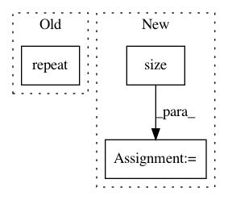

0b0eabbfd972c9e3f6323bff9d39ac5fc3ba9cc7,transformer/Translator.py,Translator,translate_batch,#Translator#,52
Before Change
//--- Repeat data for beam
src_seq = Variable(
src_seq.data.repeat(1, beam_size).view(
src_seq.size(0) * beam_size, src_seq.size(1)))
enc_output = Variable(
After Change
sz_b, len_s = src_seq.size()
src_seq = src_seq.repeat(1, sz_beam).view(sz_b * sz_beam, len_s)
sz_b, len_s, d_h = enc_output.size()
enc_output = enc_output.repeat(1, sz_beam, 1).view( sz_b * sz_beam, len_s, d_h)
//--- Prepare beams
beams = [Beam(sz_beam, self.opt.cuda) for _ in range(batch_size)]
In pattern: SUPERPATTERN
Frequency: 3
Non-data size: 3
Instances
Project Name: jadore801120/attention-is-all-you-need-pytorch
Commit Name: 0b0eabbfd972c9e3f6323bff9d39ac5fc3ba9cc7
Time: 2018-08-23
Author: yhhuang@nlg.csie.ntu.edu.tw
File Name: transformer/Translator.py
Class Name: Translator
Method Name: translate_batch
Project Name: maciejkula/spotlight
Commit Name: 03b9fd1e3b63c09ec2ef88f5da176af7b275f246
Time: 2017-09-28
Author: maciej.kula@gmail.com
File Name: spotlight/sequence/implicit.py
Class Name: ImplicitSequenceModel
Method Name: predict
Project Name: maciejkula/spotlight
Commit Name: 7973ea972b3c0f45d943a73daa41c101f1d6d517
Time: 2017-12-06
Author: maciej.kula@gmail.com
File Name: spotlight/factorization/implicit.py
Class Name: ImplicitFactorizationModel
Method Name: _get_multiple_negative_predictions